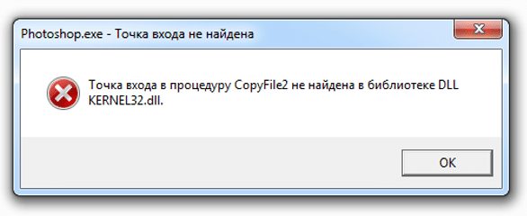

Хотите создавать яркие уникальные фото, изображения, рисунки и 3D-объекты на ПК и iPad. Встречайте новую версию самого востребованного редактора Photoshop 2021 от компании Adobe. Данное обновление содержит большое количество улучшенных функций. Например, теперь пользователи планшетов iPad могут запустить прямую трансляцию при помощи меню «Экспорт».

Если вам необходимо срочно оформить креатив для рекламы или отредактировать фото, инструмент данный инструмент вам просто необходим. Он при помощи искусственного интеллекта анализирует текущую картинку, выявляет небо и вполне реалистично выполняет замену. На текущий момент в базе данных Photoshop небольшое количество изображений для замены, но программой предусмотрена возможность добавления картинки из вашей собственной коллекции. Изображение можно отрегулировать настолько естественно, что невозможно будет найти признаки изменения фотографии.
Фотошоп 2021 — редактор изображений нового уровня
Новые не деструктивные фильтры построены на базе искусственного интеллекта, который глубоко анализируют портрет и позволяют нам менять изображение в невиданных ранее масштабах. Так, фильтр «Умный портрет» может заставить лицо на фото улыбаться, двигать головой, изменить черты лица, даже открывать закрытые глаза и менять направление взгляда.
{kind=link}
Функция позволяет изменить освещение на фото, что крайне удобно, а порой необходимо для студийных съемок. Также нейронные фильтры обрабатывают и улучшают фотографии, восстанавливают старые, раскрашивают черно-белые изображения в цветные.
Обновлен и довольно востребованный инструмент «Выделение краёв», с помощью которого можно четко разделять элементы переднего и заднего плана. Новые функции «Уточнить волосы» и «Режим уточнения с учетом объектов» облегчают расчесывание волос или других объектов, которые могут смешаться с фоном из-за похожей текстуры или цвета. Ранее работа с волосами в Photoshop до сих была не самой удобной и легкой. Но теперь волосы можно выделить на фото одним щелчком мышки, т.к. распознаванием занимается искусственный интеллект.
↓ Видео инструкция как установить и активировать ↓
Если Вам требуется помощь в освоении инструментов, на новой панели «Обнаружение» есть несколько новых руководств, которые помогут вам освоить новые навыки. Панель предоставит вам контекстные подсказки для справки по функциям и учебные пособия, которые основаны на вашей работе и проектах.
Бесплатно Adobe Photoshop 2021
- Данная версия работает только на Windows 10 на Win 7 рекомендуем Photoshop 2020 или CS6.
- Ничего не вырезано (официальная версия x64).
Скачать Фотошоп 2021 бесплатно
Размер файла: 1.43 Гбcкачать .torrent файл ↓
Размер файла: 1.43 Гб
Как активировать программу, смотрите ниже.
Активация Adobe Photoshop 2021
Для того чтоб активировать программу необходимо перенести файл Photoshop.exe из архива в папку установленной программы. Активация протестирована с официальной версией Фотошопа которую вы можете скачать с данной страницы, на другие версии ставить данный файл активации не советуем.
Скачать Файл активации для Фотошоп 2021
Пароль на архиве: adobe-2021
Примечания по установке Adobe Photoshop 2021:
1. Данная версия Фотошопа работает исключительно на Windows 10 x64 это заложено изначально компанией Adobe. Вы можете установить Photoshop 2021 на windows 7 но при открытии будет всегда ошибка как на картинке ниже! В данном случае рекомендуем Photoshop 2017.

Если вы установили на win 7 и только потом поняли что она не работает, удалить стандартными методами не получится так как программа удаления оповестит вас что будет работать только на win 10. Для решения данной проблемы воспользуйтесь утилитой удаления Adobe Photoshop.
2. Для того чтоб не было ошибок в процессе установки, обязательно отключается интернет в начале установки, пока программа не установится. Когда закончится процесс установки Фотошоп 2021, интернет сам включится, не переживайте!
Если вы хотите можете скачать Фотошоп 2021 торрент версии, но стоит предупредить что данный метод не совсем безопасен. Зачастую такие версии блокируются антивирусами.
Скачать Adobe Photoshop 2021 торрент
Используйте силу искусственного интеллекта и воплощайте свои идеи в жизнь с помощью обновлённого фоторедактора Photoshop.
У кого 11 винда, всё работает, только есть нюанс, нужно установленную папку с фотошопом убрать из «только чтение», также прийдется разархивировать активатор в отдельную папку, и если у вас будет создаваться ярлык, то ту папку, которую создал архиватор, тоже убрать «только чтение». По итогу всё запустится
Если рай существует, то вы точно туда попадете, я перерыл много сайтов в поисках нормального фотошопа, ваш оказался единственным нормальным, так еще и с инструкций по установке
Че мой вопрос удалили? Почему в скаченном документе нет файла Photoshop.exe?
все там есть, откройте другим архиватором, я просто не знаю что ответить, это глупый вопрос
При установке выдает ошибку: Ваш браузер или операционная система более не поддерживаются. Возможно, требуется установить последние обновления операционной системы.
Винда 10-64
отключите интернет и запустите установку, после установки, включите.
Есть ли функция «Изменить фон с учетом содержимого»
Да
скачивал на других сайтах и не получалась. а здесь получилось
Почему когда я загружаю файлы как по видео но у меня нет ярлыка фотошопа?
можно найти в пуске
Сделал все как в видео!
«Не удается продолжить выполнение кода, поскольку система не обнаружила MSVCP140.dll. Для устранения этой проблемы попробуйте переустановить программу.»
Что делать?
скачать другую версию, более раннюю
спасба я не русскиий но все равео все понял рибята проста делаите по инструкцый
Допустил осадную ошибку при установке. Теперь программа запускается с уведомлением о пробном периоде 7 дней. Удаление и новая установка программы проблему не решает. Возможно ли как-то решить данную проблему?
активировать по инструкции, посмотрите видео на этой странице, вы узнаете как это делается
При выполнении столкнулся с ошибкой 0×80004005. Просто скачал винрар и всё заработало
При детальном изучении мы выяснили, если у вас установлен архиватор 7z или Zip и вы перетаскиваете как на видео показано, в таком случае перетаскивание может не сработать!
Можно решить вопрос разархивировав сначала в любую папку назначения а от туда уже перенести разархивированный файл Photoshop.exe
крутой Спасибо!
Все делаю по инструкции. Начинает извлекать, сразу вырубается, выскакивают ошибки «архив повреждён»
необходимо больше подробностей
1. Windows
2. Антивирус
3. Архиватор
Пишет не поддерживается на вашу систему хоть в меня Виндовс 10
у вас x32 разрядная версия OS Windows наверное?
Пароль не работает папкаа зип не открывается.
проверяйте правильность ввода пароля! возможно скопировали с сайта с отступом символом пробела. Проверяли и делали 100500 раз специально для вас но все равно у вас какие то проблемы (
Добрый день! Сделал всё как на видео. Выдаёт ошибку 0xc0000142 . И ещё:» Ваше приложение динамически связано с версией библиотек Intel(R)IPP 2020.01(rox35c5ec66). В пути поиска системы нет DLL из приведённого ниже списка ippcvm7.dll (наиболее подходящий для вашего процессора) Укажите путь хотя бы к одному из них.»
установите младшую версию Фотошопа, например CS6
Не удаётся извлечь файл активации. пишет ошибка 0×80004005
Спасибо за обратную связь, данная ошибка проявлялась на win 10 без установленного архиватора, как мы знаем в windows 10 по умолчанию встроен архиватор zip архивов, но он не поддерживает современные методы сжатия, мы перепаковали архив теперь все должно работать без проблем.
Файл для активации распаковывается, но не запускается(перечеркнут красным крестиком). Что делать?
Не понятно как понять перечеркнут крестиком, не припомню ситуаций когда такое могло бы быть. Запускать файл активации не нужно! его надо переместить в папку с программой. Смотрите видео инструкцию!
Вроде бы получилось))